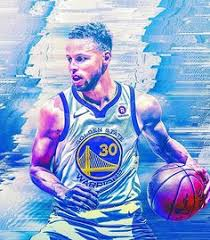
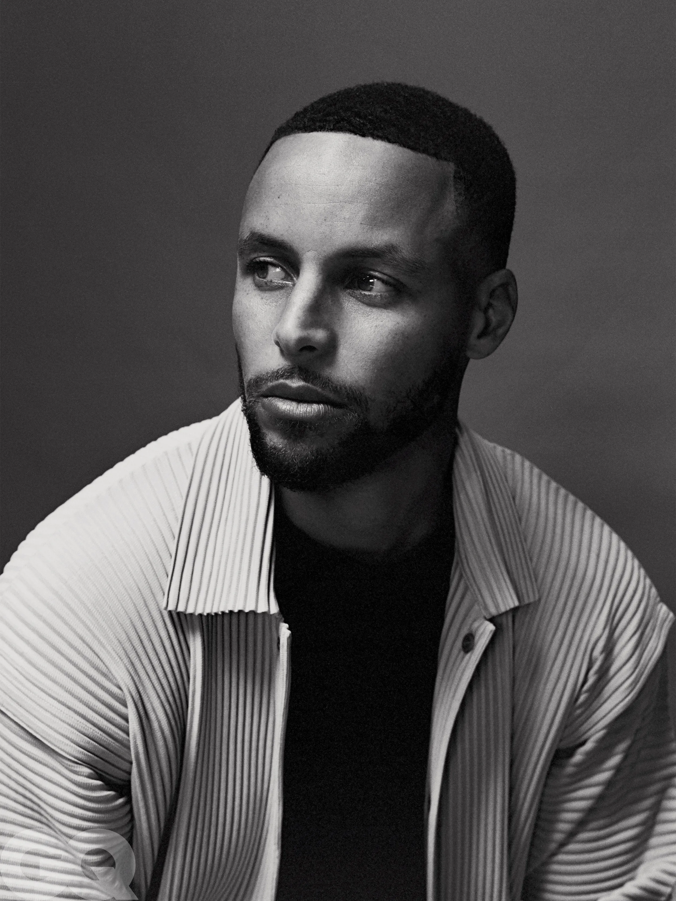

Stephen Curry
Stephen Curry 是美國職業籃球運動員，場上位置為控球後衛，現效力於NBA金州勇士。 柯瑞於2009年NBA選秀會中以首輪第7順位加入金州勇士，在2015、2016年兩度獲選年度MVP， 也是NBA史上首位全票通過的年度MVP。其職業生涯5度率領金州勇士進入總決賽，並率隊奪下 3次總冠軍。許多球員和分析家都稱柯瑞為NBA史上最偉大射手(the greatest shooter) 。柯瑞被認為使許多球隊重視三分球替籃球比賽帶來革命性改變。
| 個人資料 | 職業資料 |  | ||
|---|---|---|---|---|
| 出生 | 1988年3月14日（34歲） | 高中 | 夏洛特基督高中 | |
| 國籍 | 美國 | 大學 | 戴維森學院（2006-2009） | |
| 登錄身高 | 6英尺3英寸（1.91米 | NBA選秀 | 2009年/第一輪/第七順位被金州勇士選中 | |
| 登錄體重 | 191磅（87公斤） | 職業生涯 | 2009–至今 | |
柯瑞在2009年NBA選秀被金州勇士隊在第一輪第七順位選中，隨即簽下四年合約，開始他在NBA的傳奇旅途。 柯瑞第一場NBA比賽對陣休斯頓火箭繳出不錯的成績，上陣36分鐘取得14分，7次助攻，4次抄截，2次失誤。 在2010年1月，其隊友兼球隊得分主力蒙塔·艾利斯受傷，球隊的得分責任順理成章落在柯瑞身上。在2月10號的比賽柯瑞成功取得生涯首次三雙 ，36分，13次助攻，10個籃板，其中3分更11投7中。在4月份的比賽中，柯瑞更有接近取得四雙的表現，27分，14次助攻，8個籃板，7次抄截。 柯瑞新秀年已經有非常全面的表現，當季三分球更命中166球，命中率達43.7%，以新秀而言表示出眾。最後柯瑞入選NBA最佳新秀陣容第一隊。
|  |
|
|---|